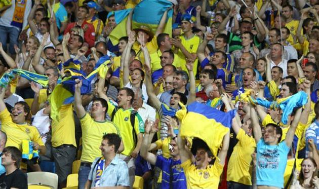
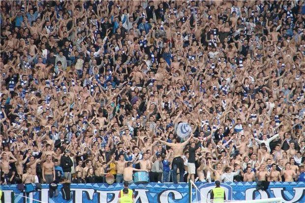
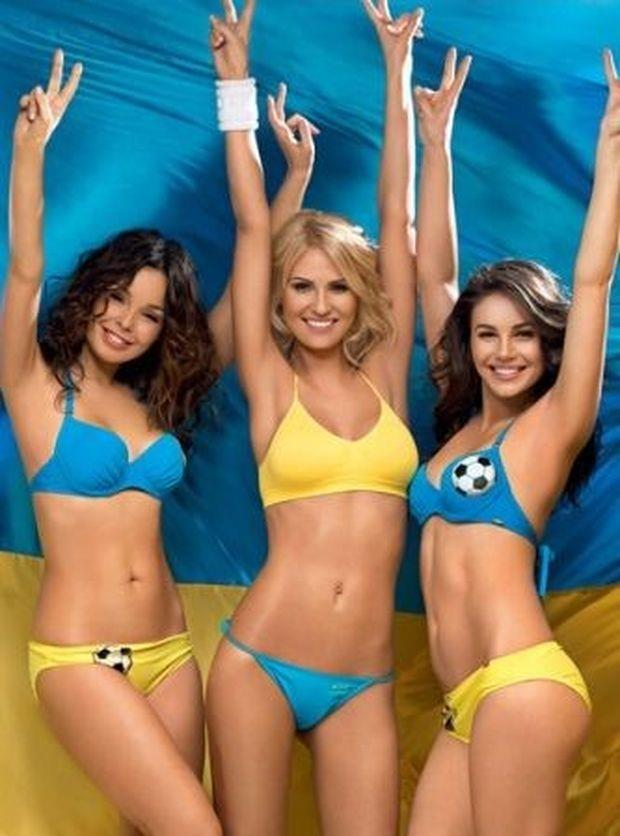

Страна: Украина
Население: 42,5 млн
Столица: Киев
Непримиримые соперники: Россия
"Прозвища" национальной сборной: желто-синие,
Наиболее известные клубные дерби:
Динамо — Шахтер
Днепр — Металлист
Ключевые фанатские объединения:
Родственники, Capitals (Динамо Киев)
Army legion (ЦСКА Киев)
Kharkiv Сity Рatriots (Металлист Харьков)
UZ44, "Молодость и дерзость" (Днепр Днепропетровск)
Banderstadt Ultras (Карпаты)

27 февраля 2014 украинские ультрас заключили перемирие на неопределенный срок.
Еще во время событий на Майдане фанаты объединились вокруг общей цели, в том числе и фаны Шахтера и Севастополя.
Поэтому сейчас в Украине наблюдается спокойствие в фан-кругах, но долго ли продлится перемирие?
Организованный саппорт в Украине, как и в большинстве стран постсоветского пространства, возник в конце 70-х годов.
Первыми организовано посещать выездные матчи начали фанаты киевского Динамо. А в конце 80-х в начале 90-х,
на волне политического кризиса и распада СССР, возникает хулиганское движение и так называемые "фирмы" — радикально настроенные фанатские группировки.
Первый известный инцидент с участием украинских фанов датирован 1987 годом, когда 150 фанатов московского
Спартака и 250 киевского Динамо устроили грандиозное побоище в самом центре украинской столицы.
Первыми известными фирмами в СССР стали Flint's Crew и Red-Blue Warriors,
а вот украинские фанаты так и не смогли создать действительно известную фирму во времена Советского союза,
были попытки заявить о себе у киевских "Кефиров", но их слава так и не вышла за пределы страны.
Вместе с падением "железного занавеса" пришел и упадок фанатского движения в Украине.
С обретением страной независимости в 1991 году начался период застоя во всей украинской ультрас-культуре.
Основным и единственным противостоянием 90-х годов стала борьба фанатов киевского Динамо и одесского Черноморца.
Одесситы во времена СССР были дружеские со всеми московскими фанатами (только сейчас одесситы постепенно отходят
от московского движения). Противостояние ультрас Динамо и Черноморца до сих пор остается одним из самых враждебных.

Период неопределенности и упадка движения длился несколько лет, почти до начала XXI века.
И это вызывает удивление, ведь Украина находится между двух стран с наиболее развитым фанатским движением в Европе — Польшей и Россией.
И поляки, и русские "утерли нос" даже британцам, и по праву входят в элиту околофутбольной субкультуры.
Интерес к фанатскому движению начал восстанавливаться в начале 2000-х, под влиянием книг Дуги Бримсона и историй английских фанатов
в Украине начало формироваться движение хулз. Способствовало этому и повышение уровня украинского футбола и силы чемпионата.
В конце 90-х в начале 2000-х фан-движение имело простой вид — алкоголь, поддержка родного клуба, общие знакомства и снова алкоголь.
Но уже с середины 2000-х годов движение переходит на более профессиональный уровень. В кругу фанатов культивируется образ спортсмена,
почти все фирмы привязаны к определенным спортивным клубам и занимаются боевыми искусствами.
Дважды в год в Украине проходят соревнования среди бойцов фан-движения, кроме того, в каждом городе часто проводят внутренние соревнования.
По сути, ультрас несколько лет готовили себя для настоящего боя, и смогли показать свои способности во время событий на Майдане и на Востоке Украины.
Исторически одним из самых серьезных фан-движений Украины считается динамовское, но и им не раз приходилось отступать, и даже в самом Киеве.
Футбольный клуб ЦСКА уже не существует более десяти лет, но достаточно долгое время их фан-группировка оставалась одной из самых известных в Украине.
Их противостояние с фанами Динамо уже вошло в историю, а столкновения между Army legion и Young Hope считаются одними из самых яростных.
Даже на Евро 2012 "армейцы" смогли отметиться. Army Legion сошлись в бою с самарской фирмой "Funeral crew" и оставили победу за собой.
Сейчас движение ЦСКА переживает не лучшие времена, что и неудивительно, ведь трудно привлекать молодое поколение, не имея профессионального клуба,
а вот основа ультрас ЦСКА постепенно отходит от движения.
Большое влияние на нынешних фанов имеет и политика, хотя все ультрас отрицают свою причастность к политическим силам,
но времена "фана без политики" уходят в прошлое. Основная масса ультрас разделяет правые идеи в целом и украинский национализм в частности.
При этом стоит отметить, что к началу всем известных событий на Востоке Украины, среди фанатов были и сторонники имперских, пророссийских идей (Черноморец).
Фанаты Арсенала единственные в Украине, которые придерживаются левых идей, но сейчас их совсем не слышно, что и не удивительно.
История взаимоотношений между фанатами и правоохранительными органами в Украине претендует на отдельный раздел.
Наиболее резонансная история, о которой стало известно на весь мир, состоялась на НСК Олимпийский в 2007 году.
Финал Кубка Украины между Динамо и Шахтером собрал полный стадион, в том числе и весь политический бомонд — от Ющенко до Януковича.
После первого забитого киевские фанаты устроили пиро-шоу, что вызвало неадекватную реакцию Беркута. Как результат — пострадали невинные болельщики,
беркутовцы начали бить всех подряд.
А уже через год динамовские фаны отметились в Ахтырке. Маленький городок на Сумщине давно не знал такой разрухи — 800 поломанных сидений на стадионе,
9 перевернутых автомобилей в городе, разбитые витрины и т.д. Но и правоохранители отыгрались на болельщиках — около 15 фанов нуждались в медицинской помощи
после столкновений с милиционерами.
Неудивительно, что очень часто на стадионах можно встретить надписи или скандирование — A.C.A.B. (All cops are bastards – «Все копы ублюдки»).
Но в последние годы наблюдается обратная тенденция, те же Родичи, которые активно выступали против правоохранительных органов, теперь почти
все имеют удостоверение сотрудников МВД.
Несмотря на перемирие, в последние годы наблюдается тенденция к росту численности фан-группировок. Фанаты появились во многих командах Премьер-лиги и Первой лиги.
Именно во время событий на Майдане и конфликта на Востоке фанатские группировки получили наибольшую славу и расцвет, но это мало касается самого футбола.
Основная часть фанатов из Young Houp, Capitals, Днепра имеет опыт боевых действий на Востоке, и как они будут себя вести после окончания войны на Донбассе —
достаточно серьезный вопрос. Ведь наблюдается тенденция, когда фанаты принимают участие во многих общественных мероприятиях (срывают митинги, пресс-конференции,
выступают против маршей равенства и распространяют расизм).
Наиболее влиятельной фанатской группировкой Украины считаются ультрас Динамо Киев. Также стоит отметить фанатов Днепра (UZ44), Черноморца (Банда Дюка, Ultras Group),
Шахтера (Za Boys Ultra) и Карпат (Banderstadt Ultras). К элите украинского фан-движения также относятся ультрас Полтавы, Кривого Рога , Черкасс и Чернигова,
возрождается движение в Ровно.
О наиболее массовом движении (Динамо) следует добавить отдельно. Несмотря на перемирие среди всех ультрас страны, в самом динамовском кругу произошел раскол.
Young Houp, Трудовые Резервы и Terror Family объединились в "фирму" Родичи и выступают отдельно ото всех. Не принимают участия в совместных маршах и акциях,
в то время как сами довольно часто становятся «героями» публикаций. Избиение темнокожих болельщиков на игре с Челси, нападение на болельщиков Генгама,
появление на поле после матча Днепр — Наполи, избиение участников марша равенства, срыв акций у кинотеатра Октябрь, в Парке Славы и т.д. Даже в Харькове Секта82,
которая всегда была на другом секторе, вернулась к остальным фанам и выступает единым фронтом, а почему Киев не может найти общий язык, это уже другой вопрос.
Официально фанаты объявили о перемирии, но "махачи" все равно происходят, просто тщательно скрываются и не выносятся на публику. Последняя известная схватка
состоялась в сентябре 2013 года в Харькове — накануне игры между Металлистом и Динамо фанаты обоих клубов устроили драку в центре города.
Остановить "махач" смог только спецотряд Беркута, сотрудники милиции не справились.
Стоит также вспомнить враждебные лагеря в Украине, ведь перемирие фанов рано или поздно все равно закончится:
Динамо: друзья — Карпаты, Днепр, Десна, враги: Черноморец, Шахтер, Металлист, Ворскла, Металлург (Запорожье), Арсенал (Киев);
хорошие отношения — Севастополь, Заря.
Днепр: друзья — Карпаты, Днепр, Севастополь, Таврия; враги — Металлист, Металлург (Запорожье), Черноморец, Шахтер, Арсенал (Киев).
Металлист: друзья — Черноморец, Кривбасс, ЦСКА (Киев); враги — Динамо, Днепр, Арсенал; хорошие отношения: Карпаты, Заря.
Черноморец: друзья — Металлист, Ворскла, Шахтер; враги — Динамо, Карпаты, Днепр, Арсенал.
Металлург (Запорожье): друзья — Волынь, Кривбасс; враги — Динамо, Днепр, Карпаты, Шахтер.
Карпаты: друзья — Динамо, Днепр, Шахтер; враги — Ворскла, Металлург (Запорожье), Черноморец, хорошие отношения Металлист
Шахтер: друзья — Ворскла, Черноморец; враги — Динамо, Днепр, Металлист Металлург (Запорожье),
Что касается отношений с зарубежными командами, то здесь ситуация несколько сложнее. "Махачей" украинских ультрас с зарубежными практически не происходит.
Даже динамовцы со спартаковцами в 2008 году во время матча квалификации Лиги чемпионов не проводили никаких акций. За последние годы можно вспомнить лишь
встречу с венграми в 2012 году — в бою 27 на 27 победу одержали украинцы. Среди зарубежных друзей Укараины стоит упомянуть литовский Жальгирис,
фаны которого часто приезжают в Киев, а также дружбу ультрас Шахтера с одноименными коллегами из Белоруссии
Довольно известная история, когда фанаты Динамо ("Трудовые резервы") поехали в Рим на игру Ромы с Шахтером, и в самом центре Рима отобрали "розы" донецких фанов.
Вообще стоит отметить, что Шахтер это классический пример "сильная команда не значит сильное фан-движение".
В Донецке была массовая поддержка и хороший перформанс на стадионе, но даже на уровне Украины "фирма" Шахтера не могла составить конкуренцию основным группировкам.

Несмотря на все внутренние противоречия, отечественные ультрас в вопросах сборной выступают единым фронтом.
Национальные цвета всегда выступали объединяющим фактором, позволяющим организовать неплохую визуальную и голосовую поддержку.
Яркий пример — игра сборной Украины с англичанами в 2009 году. За несколько дней до матча в Одессе состоялся масштабный "махач" между
фанами Динамо и Черноморца, но на игре сборной в Днепропетровске все выступали единым маршем, никто никого не трогал.
Учитывая последние события в Украине и "перемирие" в фанатских кругах, сборная Украины получит полную поддержку со всех сторон.
Фанаты даже объединяются для совместного путешествия во Франции и обещают поддержку сборной Украины на чемпионате Европы 2016.